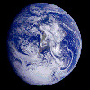
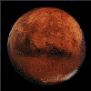
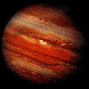
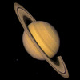

| PLANET | Mass (kg) | Diameter (km) | Mean Density (kg/m3) | Escape Velocity (m/s) | Average Distance from Sun | Rotation Period | Revolution Period |
|---|---|---|---|---|---|---|---|
| Earth | 5.98 x 1024 | 12756 | 5520 | 11200 | 1 AU (149,597,890 km) | 1 (23.93 hours) | 365.26 |
| Mars | 6.42 x 1023 | 6787 | 3940 | 5000 | 1.524 AU (227,936,640 km) | 1.026 | 686.98 |
| Jupiter | 1.90 x 1027 | 142,800 | 1314 | 59500 | 5.203 AU (778,412,020 km) | 0.41 (9.8 Earth hours) | 11.86 |
| Saturn | 5.69 x 1026 | 120660 | 690 | 35600 | 9.537 AU (1,426,725,400 km) | 0.44 (10.2 Earth hours) | 29.46 |